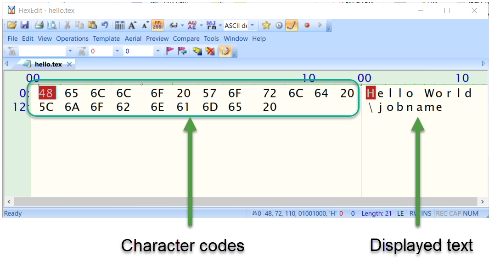

How TeX macros actually work: Part 1
Introduction: Objectives of this series
This article series has an ambitious goal: to explain how TeX macros (such as LaTeX commands) actually work—at the most fundamental level, inside the actual TeX engine software. Instead of relying solely on a suite of example macros designed to demonstrate various features, edge cases and behaviours of TeX, we’ll look inside TeX itself to see how and why its macro programming methods work the way they do.
To achieve our aim we need to start by discussing topics that are quite low-level and, initially, these might seem somewhat distant from the task of typesetting your documents. Hopefully, after taking a deeper-dive you’ll come through with a foundation for building a better understanding that will, in the end, save you a lot of time and, perhaps, minimize the frustration levels too.
The TeX programming language: Know the feeling?
It is not unduly harsh to describe the TeX programming language as somewhat arcane, because it is—at least by the standards of most mainstream programming languages in use today. As you start your journey to learn more about TeX/LaTeX, particularly if you want to write non-trivial macros, you quickly encounter notions such as category codes, tokens/tokenization and “expansion” of commands or macros. That barrage of concepts is likely to be quite alien, perhaps leaving you feeling bewildered and, at times, possibly slightly frustrated as your pathway to success is not always aided by some of TeX/LaTeX’s near-impenetrable error messages.
So, where do we start? With category codes.
TeX engines fall into a class of software called compilers: programs which input a file written in a source language and compile (transform) it to an output file written in a target language. More specifically, TeX is a document compiler. For TeX engines (compilers) the input file is written in the TeX typesetting language and the target is an output file written in another “language” such as DVI or PDF—although we are being a little relaxed with our notion of “language”.
Let’s take a closer look at the source, or input, “language” used to write your TeX file. A .tex file is, ultimately, one long sequence of characters (including line break characters): comprising text destined for typesetting interspersed with \, }, $, [ and all sorts of characters which can appear in a seemingly near-infinite range of combinations. Anyone who does not use TeX/LaTeX might look at a typical .tex file and be forgiven for perceiving it as a rather confusing jumble of characters with little, if any, visible file structure. The LaTeX macro package certainly goes some way to “imposing” some basic structure on a .tex input file. However, between the \begin{document} and \end{document} it’s up to the document author as to what goes in there. If you look at .tex files written using Knuth’s original Plain TeX macro package, you’ll see that document structure is almost completely absent.
So, in general, a TeX input file can appear to be rather unstructured, a seemingly arbitrary mixture of content to be typeset interspersed with instructions (commands) that guide the typesetting of that content. How is it even possible for TeX to make sense of a typical .tex input file: to filter that incoming jumble of characters into actionable instructions for the typesetting engine and content that is to be typeset?
Filtering the jumble: Say hello to category codes
Any human observer, who does not know anything about TeX, might look at a .tex file and recognize certain characters such as $ and know that is the sign for a currency, or see an & and identify it as an ampersand. That observer infers a meaning for each character they see—a meaning based on the role that character plays within human communication. Additionally, they may see characters such as a, e, o and know they are classified as vowels whilst others such as b, c or d are classified as consonants. As humans, we have a sort of in-built lookup table (in our memory) through which we assign a meaning to each character we see—a meaning based on the role that character performs for the languages in which we are able to communicate.
To process a .tex file the TeX software also has to look at every character within your input and it too needs to assign a meaning to each and every character it “sees”. However, TeX is just a software-based machine that deals with processing text—stored as a sequence of integers (character codes) located in an input file. As a machine, TeX has to be programmed with the relevant data which tells it how to determine the meaning of a character it is “looking at” and subsequently what it needs to do with it. How does TeX achieve this?
The answer is one of those TeX-only concepts: category codes, of which there are 16, ranging from 0 to 15. As far as TeX is concerned, every character that it ever expects to see within a .tex file has a so-called category code pre-assigned to it. Inside TeX software is a sort of “lookup table” which lists the category code currently assigned to each character that TeX might see within an input .tex file. You should think of TeX’s category codes as assigning a meaning to each individual character within the stream of input that TeX has to examine (scan).
To typeset your document, a TeX engine has to read (scan) every single character but TeX’s immediate interest is not the actual characters (character codes): a character’s category code is of greater importance when scanning the input. A character’s current category code determines the current meaning of that character at the time TeX reads it in: that category code determines how TeX will treat/process each character—we will explain why we say “current category code” and “current meaning”. It is through category codes that TeX is able to filter the incoming jumble of characters to distinguish between characters (content) destined for typesetting and characters which form instructions to be processed—commands that TeX needs to execute.
The following table lists those 16 category codes: what they each signify together with examples of characters typically assigned to each category.
| Category code | Description | Standard LATEX/TEX |
|---|---|---|
| 0 | Escape character—tells TEX to start looking for a command | \ |
| 1 | Start a group | { |
| 2 | End a group | } |
| 3 | Math shift—switch in/out of math mode | $ |
| 4 | Alignment tab | & |
| 5 | End of line | ASCII code 13 (\r) |
| 6 | Macro parameter | # |
| 7 | Superscript—for typesetting math: $y=x^2$ \(y=x^2\) | ˆ |
| 8 | Subscript—for typesetting math: $y=x_2$ \(y=x_2\) | _ |
| 9 | Ignored character | ASCII 0 <null> |
| 10 | Spacer | ASCII codes 32 (space) and 9 (tab character) |
| 11 | Letter | A...Z, a...z, (and thousands of Unicode characters) |
| 12 | Other | 0...9 plus ,.;?" and many others |
| 13 | Active character | Special category code for creating single-character macros such as ˜ |
| 14 | Comment character—ignore everything that follows until the end of the line | % |
| 15 | Invalid character, not allowed to appear in the .tex input file | ASCII code 127 (DEL) |
The use of category codes is TeX’s essential mechanism for filtering its incoming stream of characters, making sense of your input to determine:
- characters that comprise the text to be typeset;
- delimiting content that should typeset as mathematics;
- character sequences which are names of commands to be processed or actioned;
- … and many other typesetting operations.
Initially, you might think that each character’s category code (meaning) is some sort of fixed allocation: unchangeable and permanently baked into the inner foundations of TeX software, but this is not so. As noted, TeX maintains an internal lookup table to store details of which category code is currently assigned to each character—we quite deliberately say currently assigned because the category code for any character (not yet read-in) can be changed by using a primitive (built-in) command called \catcode. This brings considerable flexibility because you can, if you wish, completely change the way that TeX will treat or interpret the meaning of any character subsequently read from the input, offering tremendous scope for sophisticated typesetting applications.
If you are mostly interested in the use of LaTeX to “get the job done”, chances are that you might not have directly encountered category codes except, perhaps, through error messages you may have seen. But rest assured, category codes are a core component of a TeX engine’s operations: enabling LaTeX (and LaTeX packages) to actually do the work of typesetting your document.
When your TeX engine starts up (“bootstraps”) it will use a set of default allocations of characters to category codes but, via the \catcode command, those defaults may be changed by the core LaTeX code (macros) and/or by LaTeX packages you have loaded—or indeed by your own TeX code or macros. However, over time and through tradition/usage, certain characters allocated to particular category codes have become accepted as “standards” and adherence to those standards is certainly desirable if you want your documents to be portable and easily shared with colleagues or other users. For example, the \ character is allocated category code 0 to indicate the start of a TeX/LaTeX command—see the table above.
Reading (scanning) the input
When TeX reads (scans) the next character from your input file the very first thing it does is to look at its category code, so let’s take a closer look at what happens when TeX reads a typical line of input.
Suppose we have a .tex file that contains the text Hello World \jobname somewhere within a paragraph. If we look inside the .tex file using a hex editor, we see that the sequence of characters Hello World \jobname in our .tex file is just a series of integers, or character codes, shown in the screenshot below as the hexadecimal sequence:
48, 65, 6C, 6C, 6F, 20, 57, 6F, 72, 6C, 64, 20, 5C, 6A, 6F, 62, 6E, 61, 6D, 65, 20

If we convert from hexadecimal (base 16) to decimal (base 10), the sequence of character codes is:

We also know that, to TeX, each character has a corresponding category code; so, based on the table above we know the following default category code allocations are (probably) also being used:

Thus, to TeX, each character in the input file is represented by two numeric values—its character code and its category code:

At this point were are only considering the very first stage in TeX’s processing of your file: scanning the individual characters. So what does actually TeX do with these pairs of character codes and category codes? Once TeX has scanned an individual character and looked-up its corresponding category code, precisely how does TeX use this information to “filter” the incoming characters?
Part 2
In part 2 we take a closer look at how TeX reads your input: pretending to be TeX’s “eyes” at it looks at your input, character-by-character.
Overleaf guides
- Creating a document in Overleaf
- Uploading a project
- Copying a project
- Creating a project from a template
- Using the Overleaf project menu
- Including images in Overleaf
- Exporting your work from Overleaf
- Working offline in Overleaf
- Using Track Changes in Overleaf
- Using bibliographies in Overleaf
- Sharing your work with others
- Using the History feature
- Debugging Compilation timeout errors
- How-to guides
- Guide to Overleaf’s premium features
LaTeX Basics
- Creating your first LaTeX document
- Choosing a LaTeX Compiler
- Paragraphs and new lines
- Bold, italics and underlining
- Lists
- Errors
Mathematics
- Mathematical expressions
- Subscripts and superscripts
- Brackets and Parentheses
- Matrices
- Fractions and Binomials
- Aligning equations
- Operators
- Spacing in math mode
- Integrals, sums and limits
- Display style in math mode
- List of Greek letters and math symbols
- Mathematical fonts
- Using the Symbol Palette in Overleaf
Figures and tables
- Inserting Images
- Tables
- Positioning Images and Tables
- Lists of Tables and Figures
- Drawing Diagrams Directly in LaTeX
- TikZ package
References and Citations
- Bibliography management with bibtex
- Bibliography management with natbib
- Bibliography management with biblatex
- Bibtex bibliography styles
- Natbib bibliography styles
- Natbib citation styles
- Biblatex bibliography styles
- Biblatex citation styles
Languages
- Multilingual typesetting on Overleaf using polyglossia and fontspec
- Multilingual typesetting on Overleaf using babel and fontspec
- International language support
- Quotations and quotation marks
- Arabic
- Chinese
- French
- German
- Greek
- Italian
- Japanese
- Korean
- Portuguese
- Russian
- Spanish
Document structure
- Sections and chapters
- Table of contents
- Cross referencing sections, equations and floats
- Indices
- Glossaries
- Nomenclatures
- Management in a large project
- Multi-file LaTeX projects
- Hyperlinks
Formatting
- Lengths in LaTeX
- Headers and footers
- Page numbering
- Paragraph formatting
- Line breaks and blank spaces
- Text alignment
- Page size and margins
- Single sided and double sided documents
- Multiple columns
- Counters
- Code listing
- Code Highlighting with minted
- Using colours in LaTeX
- Footnotes
- Margin notes
Fonts
Presentations
Commands
Field specific
- Theorems and proofs
- Chemistry formulae
- Feynman diagrams
- Molecular orbital diagrams
- Chess notation
- Knitting patterns
- CircuiTikz package
- Pgfplots package
- Typesetting exams in LaTeX
- Knitr
- Attribute Value Matrices
Class files
- Understanding packages and class files
- List of packages and class files
- Writing your own package
- Writing your own class